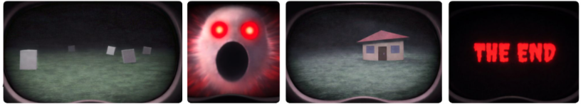
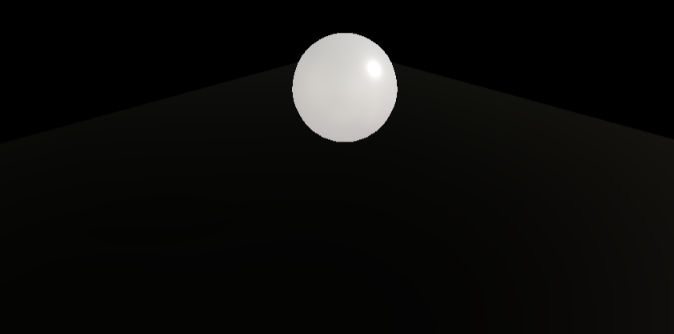
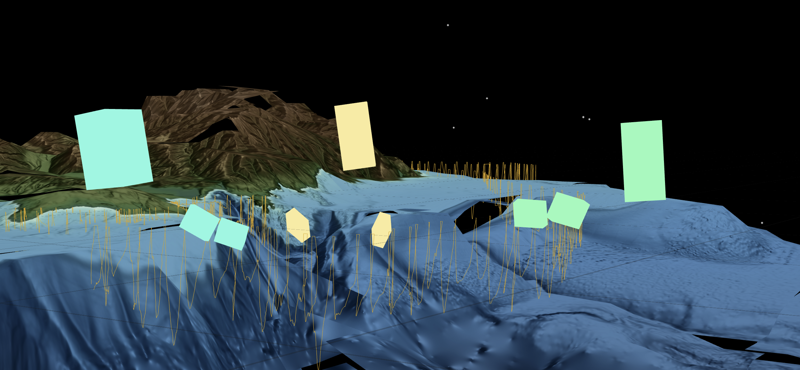

Exploring User Affect in Virtual Reality Cultural Heritage Learning Using EEG
Godje, M., Gonzalez-Sanchez, J., & Minor, E.
AHFE International, 2026 (forthcoming).
Hi, I'm Maryann Godje! I'm a current student at Cal Poly San Luis Obispo. I'm passionate about VR/AR/XR, Human-Computer Interaction, computer graphics, game development, web development, and biotech. I'm interested in research to help improve user experiences and make technology more accessible to everyone. My next steps are defending my thesis and graduating with my Masters. I also aim to continue my research and applying for new graduate and internship opportunities! 😊
Godje, M., Gonzalez-Sanchez, J., & Minor, E.
AHFE International, 2026 (forthcoming).
Godje, M., & Gonzalez-Sanchez, J.
Meaningful XR 2026 Proceedings, 2026.
Ghosh, S., Godje, M., Lesser, C., Wang, Y., Lorusso, P., Soga, K., …, & Cruz, S.
Meaningful XR 2026 Proceedings, 2026.
Read paper (PDF)Godje, M., & Gonzalez-Sanchez, J.
Companion Proceedings of the Symposium on Interactive 3D Graphics and Games , 2026, pp. 1–2.
View on ACM...
Concepts Learned: Real-time EEG streaming, Affective Computing, VR, Cultural Heritage Learning
Programming Languages/Tools used: Three.js, Node.js, MQTT, Blender

...
Concepts Learned: Real-time EEG streaming, Affective Computing, VR, Game Development
Programming Languages/Tools used: Unity, MQTT

...
Concepts Learned: Multisensory Design, VR, Affective Computing, Music, User Experience
Programming Languages/Tools used: Three.js and Node.js

This project was developed in the Social Emotional Technology (SET) lab at UC Santa Cruz under the direction of Dr. Katherine Isbister and PhD student Samir Ghosh. This project is a multi-user VR experience that aided marine biologists to visually analyze northern elephant seal paths in around Monterey, CA. The goal is to visually see the paths the seals took, the depths they went, and at what points were they asleep during their dives in migration. My contributions to this project included frontend and backend developments to create raycasting modalities that were allocentric, meaning that all users in the VR space could see the same information. An example of this is a feature where users can mark places of interest along seal paths. Once a user marks a place, all users can see their marker. I also helped develop the scaling, sizing, and depth of the seals' paths using mathematical concepts for 3D visualization purposes.
Concepts Learned: Marine Biology, Multi-user VR, VR development
Programming Languages/Tools used: Three.js and Node.js
This project was also developed in the Social Emotional Technology (SET) lab at UC Santa Cruz under the direction of Dr. Katherine Isbister and PhD student Samir Ghosh. Like the Northern Elephant Seal Migration project, it is a multi-user VR experience that aided civil engineers to problem solve the unfortunate traffic situation that occurred during wildfire evacuation in Inverness, CA. The goal is to find better roads to redirect citizens to. This way, first responders are able to reach the fire in time to put it out. My contributions to this project included developing raycasting and calloutable features in the frontend, which allow users to hover, click, and display the information of cars and roads in VR. I also networked in the backend to make sure these features were more allocentric. This allows all users in the VR space to see a user's pop-ups instead of just the person who selected the pop-up.
Concepts Learned: Wildfire Management, Multi-user VR, VR Development
Programming Languages used: Three.js and Node.js.
This project was developed in Dr. Daniel Shapiro's CMPM 146 Game AI class, which I took in Summer of 2024. I worked in a team of 4 to develop an AI Visual Novel game where the user can tell the AI to generate any story they wanted. The LLM model, then, creates a storyline with a climax and resolution, as well as displays images relevant to each scene. The player gets 5 options after each scene: 4 AI-generated options or a "write your own" selection where the player can change the trajectory of the story. My contributions included developing the frontend and web development features with Three.js to give a more mystical feel to the game. I explored the great possibilities of HTML by creating several webpages (homepage, game selection page, game start page, etc.) to enhance user experience. I learned how to effectively brainstorm ideas and communicate with my team members to produce a high-quality prototype for a game.
Concepts Learned: Machine Learning, LLMs, Game Development
Programming Languages used: Python, Three.js, HTML